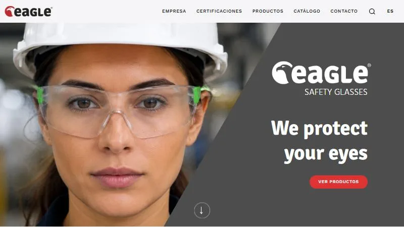
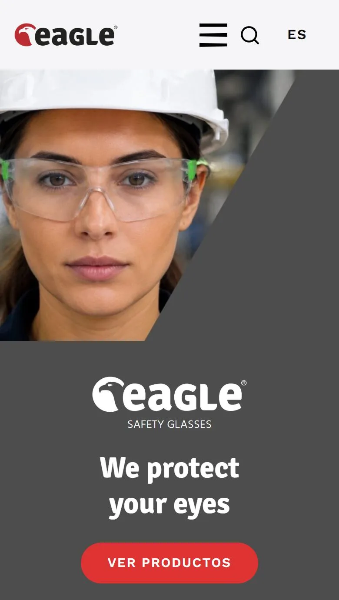
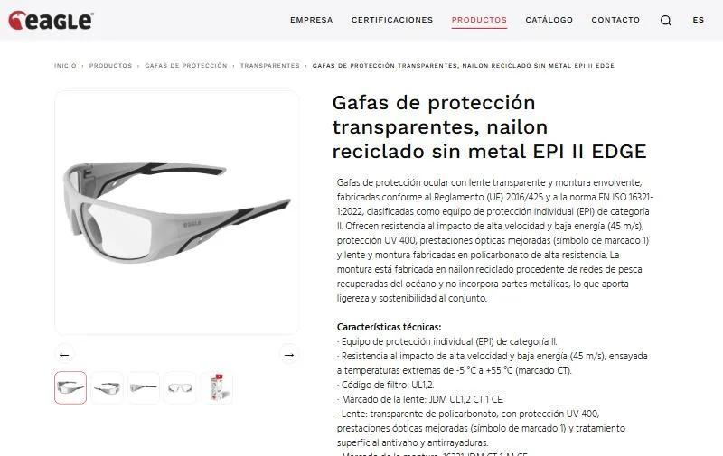

Trabajo profesional en Aghasa Turis
Eagle Glasses, un catálogo conectado a una API
Web nueva para EAGLE, una marca italiana de gafas de seguridad, hecha desde cero. El catálogo de productos se carga desde una API, que probé y documenté con Postman antes de conectarla al frontend.


El encargo
La marca necesitaba transmitir a la vez protección y diseño. La portada lo resume en tres ideas, lentes antivaho, lentes antirrayas y diseño italiano, y recuerda que las gafas cumplen la norma ISO 16321.
El catálogo se organiza en cuatro familias: gafas de protección (transparentes, alta visibilidad, oscuras, polarizadas y de soldadura), gafas de protección graduadas, gafas de sol y accesorios.
Un catálogo que viene de una API
Las fichas de producto no se escriben a mano. La información sale del sistema de catálogo de la marca a
través de una API, y la web genera cada ficha a partir del identificador del producto, el mismo que aparece
en la dirección: /productos/1652169/….
Antes de programar el frontend probé las peticiones en Postman para conocer la estructura de los datos. Cada ficha muestra:

- Galería de imágenes del producto.
- Referencia y código EAN.
- Descripción, especificaciones técnicas, usos recomendados y mantenimiento.
- Certificaciones y tabla de características: tipo de lente, antivaho, antirrayas, filtro UV…
- Medidas y datos de embalaje y logística.
- Ficha técnica y declaración de conformidad en PDF.
- Productos relacionados.
La API también trae los textos traducidos, así que una misma plantilla sirve para los seis idiomas de la web: español, inglés, italiano, alemán, portugués y francés. La ventaja es que la marca actualiza un producto en un solo sitio y la web lo muestra en todos los idiomas sin tocar el código.
Un selector de gafas
Con más de cuarenta modelos, elegir no es fácil. Por eso la web tiene un selector: el usuario responde unas pocas preguntas sobre su actividad y en un minuto recibe el modelo que mejor encaja.